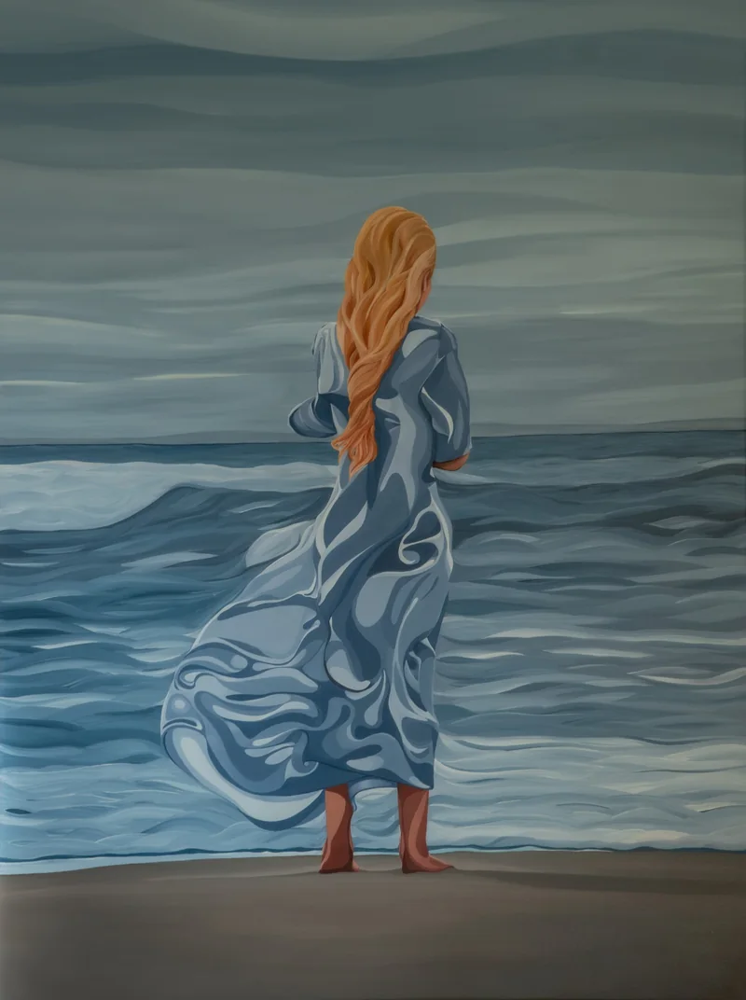
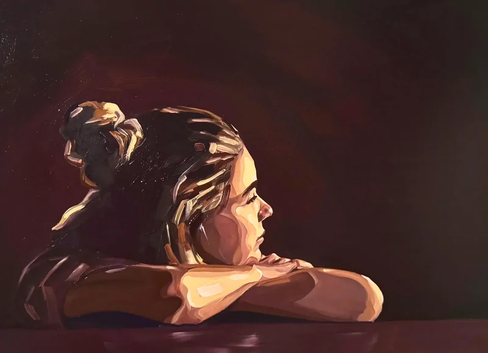
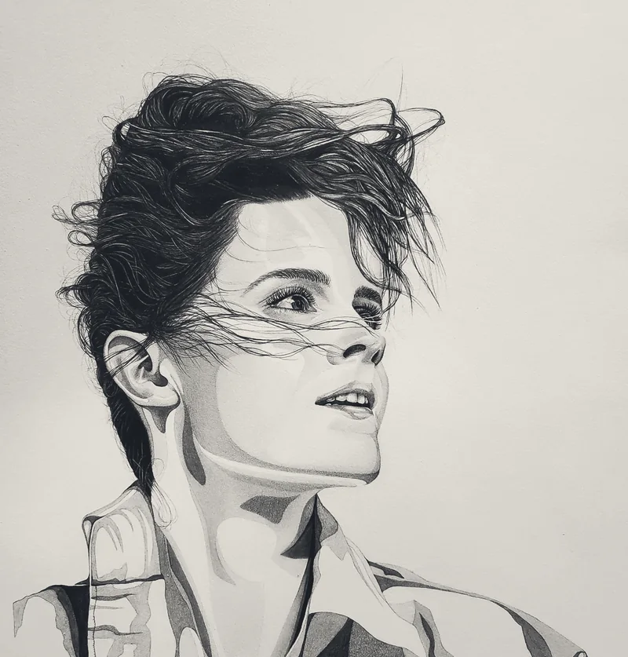

I believe great artistry and research requires mastering diverse skills and constantly questioning your view of a subject.
Work
-
AI-Firmware
Embedded
Provide an agent with the firmware for a device it has never seen. Reverse-engineer what that device does and write a standard, reusable interface for downstream tasks.
-
CIPHER
HUMAN–AI-INTERACTION
An AI assistant that processes information-dense documents to provide useful decision support for Army commanders at the front lines. To appear at I/ITSEC 2026.
-
GFM-Interp
Interpretability
Applying mechanistic interpretability techniques to a masked genomic foundation model reveals a donor-acceptor computation.
-
Multimodal chest X-ray
Multimodal ML
Can clinical context make a chest X-ray classifier better? A pretrained image encoder fused with text written before the X-ray, across twelve MIMIC-CXR findings.
-
Drawing and painting
Practice
Figures in graphite and oil. I learned to express myself creatively through art at a young age from my uncle.
Art
These graphite and oil pieces focus on emotive figures. By layering sharp shapes of light against smooth gradients, I define forms through the movement of light.



Writing
-
Retrieval-Augmented LLMs for Military Decision Support and Evaluation
-
Mechanistic Discovery in a Genomic Foundation Model Reveals a Donor-Acceptor Computation